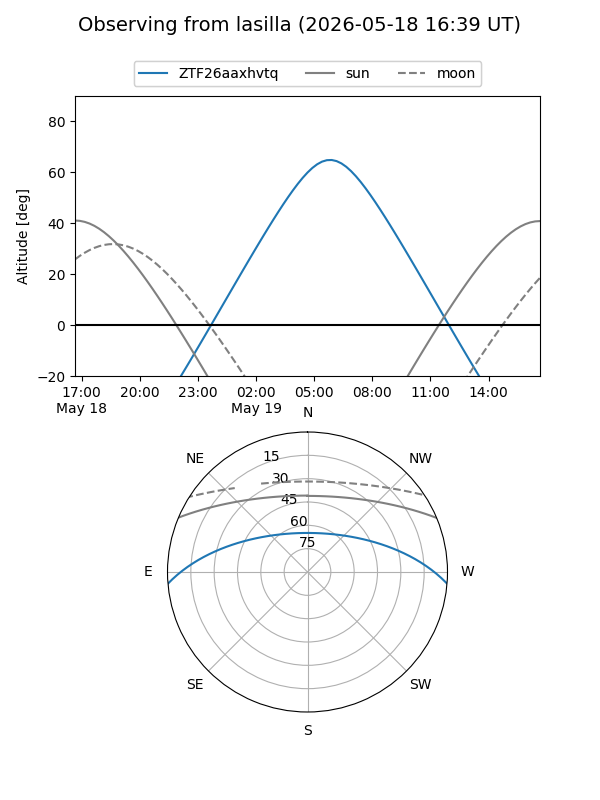
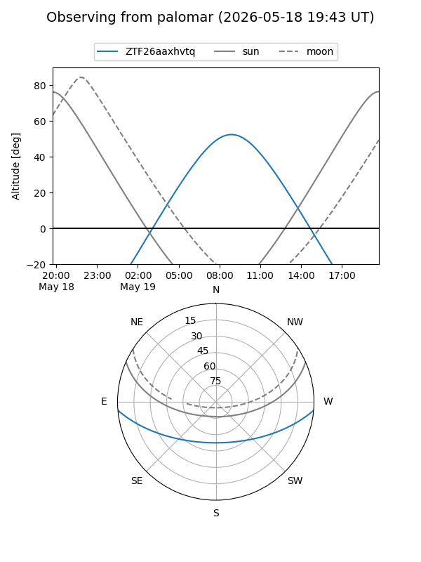

ZTF26aaxhvtq
Target ZTF26aaxhvtq at 2026-05-19 08:37
Aliases and brokers:
FINK: link
Lasair: link
ALeRCE: link
alt names
ZTF26aaxhvtq (ztf,fink_ztf)
Coordinates:
equatorial (ra, dec) = 253.0584,-4.10196
equatorial (HMS+DMS) = 16:52:14.01,-04:06:07.07
galactic (l, b) = (14.4261,+24.11475)
Flags:
Photometry:
last ztfg=20.12
1 ztfg detections
Lightcurve
Visibility


Additional plots